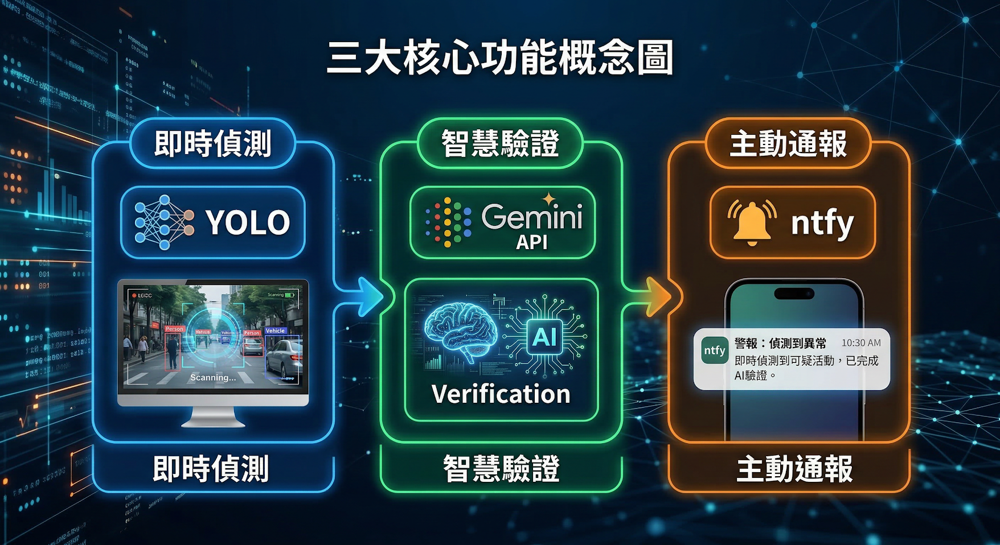

捷運安全需要更主動的防護。我們為大眾運輸打造專屬的「預警系統」，在危機醞釀的初期就能及時察覺，將被動的「事後補救」化為積極的「事前預防」。
傳統監視器多半用於事後調查，而 SafeGuard AI 能在異常發生當下立即發出提醒，不僅減輕站務人員的巡視壓力，更能實質保障乘客的安全。
AI 會自動過濾影像並標記出異常畫面，讓站務人員能將心力放在處理真正需要關注的事件上，降低長時間觀看螢幕的疲勞。
系統能在危險物品出現或異常行為發生的初期立即辨識，為現場乘客、站務與警消人員爭取最關鍵的數十秒反應時間。
有別於事故發生後才尋求協助的通報軟體，我們致力於在危機升級前主動介入，防範於未然，有效避免意外發生。

結合高效率的影像辨識與進階分析技術，確保每一次的警示都準確且值得信賴。
系統能即時分析畫面中的不尋常情況，例如晴天穿著雨衣、異常動作，或隨身攜帶危險物品時，會第一時間鎖定並發出警示。
系統採用兩階段辨識：先快速篩選可疑目標，再透過進階模型進行深度驗證。層層把關確保警報的準確度，避免引起不必要的恐慌。
當站務人員確認異常狀況後，系統能迅速將警示訊息推播至乘客的手機中，讓大眾能在第一時間掌握資訊並採取避險行動。
透過實際情境模擬，了解 SafeGuard AI 如何在危機發生的前一刻，成功辨識異常並發出預警，為大眾運輸爭取黃金應變時間。
我們致力於運用尖端人工智慧技術，解決社會公共安全痛點，創造更美好的未來。